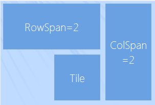

Tiles
Tiles
RadTileElement represents a simple tile which can contain text and image and acts like a simple button.
You can also add other elements to its Children collection programmatically.
To set the location of a tile, set its Column and Row properties either at
design time or via code. These values are zero based and describe the location cell in either the main panel or the group in which the tile is placed.
[C#] Set tile position
this.radTileElement1.Row = 1;
this.radTileElement1.Column = 0;
[VB.NET] Set tile position
Me.RadTileElement1.Row = 1
Me.RadTileElement1.Column = 0

RadPanorama uses dynamic number of columns, so you can set the Column property of a tile with a value,
greater that the ColumnsCount value. However, setting the Row property with a value,
greater than the RowsCount value, will result in an exception.
To change the span of a tile, set its RowSpan and ColSpan properties.
The RowSpan property specifies how many cells of the row should be occupied by the tile.
The ColSpan property specifies the number of cells in each column which the tile should occupy.
The CellPadding property specifies the offset of the tile according to the bounds of the cells.
The following code snippet demonstrates using the RowSpan, ColSpan and CellPadding properties.
__[C#] __
this.radTileElement1.RowSpan = 2;
this.radTileElement1.CellPadding = new Padding(5);
this.radTileElement2.ColSpan = 2;
this.radTileElement2.Column = 2;
this.radTileElement2.CellPadding = new Padding(5);
this.radTileElement3.Row = 1;
this.radTileElement3.Column = 1;
this.radTileElement3.CellPadding = new Padding(5);
__[VB.NET] __
Me.RadTileElement1.RowSpan = 2
Me.RadTileElement1.CellPadding = New Padding(5)
Me.RadTileElement2.ColSpan = 2
Me.RadTileElement2.Column = 2
Me.RadTileElement2.CellPadding = New Padding(5)
Me.RadTileElement3.Row = 1
Me.RadTileElement3.Column = 1
Me.RadTileElement3.CellPadding = New Padding(5)
'#EndRegion
RadLiveTileElement1.Row = 2
RadLiveTileElement1.RowSpan = 3
RadLiveTileElement1.Text = ""
'#Region "LiveTiles"
RadLiveTileElement1.Items.Add(New LightVisualElement() With { _
.Text = "Movie Idea: Pirates of the Carribean" _
})
RadLiveTileElement1.Items.Add(New LightVisualElement() With { _
.Text = "Movie Idea: Inception" _
})
RadLiveTileElement1.Items.Add(New LightVisualElement() With { _
.Text = "Movie Idea: The Expendables" _
})
RadLiveTileElement1.Items.Add(New LightVisualElement() With { _
.Text = "Movie Idea: Harry Potter and the Deathly Hallows" _
})
'#EndRegion
'#Region "AnimationProperties"
Me.RadLiveTileElement1.AnimationFrames = 15 'sets the number of frames in a transition
Me.RadLiveTileElement1.AnimationInterval = 30 'sets the interval between each frame in the transition in miliseconds
Me.RadLiveTileElement1.ContentChangeInterval = 7000 'sets the interval between each content change
Me.RadLiveTileElement1.TransitionType = ContentTransitionType.SlideUp 'sets the type of the transition animation
'#EndRegion
End Sub
Sub MetodUsedToStoreRegions()
'#region SetTilePosition
Me.RadTileElement1.Row = 1
Me.RadTileElement1.Column = 0

Live Tiles
RadLiveTileElement extends the functionality of RadTileElement by providing
means of displaying content that changes on a specified time interval.
To change the content element, you can edit the contents of the tilesҠItems collection:
[C#] Add live tiles
radLiveTileElement1.Items.Add(new LightVisualElement()
{
Text = "Movie Idea: Pirates of the Carribean"
});
radLiveTileElement1.Items.Add(new LightVisualElement()
{
Text = "Movie Idea: Inception"
});
radLiveTileElement1.Items.Add(new LightVisualElement()
{
Text = "Movie Idea: The Expendables"
});
radLiveTileElement1.Items.Add(new LightVisualElement()
{
Text = "Movie Idea: Harry Potter and the Deathly Hallows"
});
[VB.NET] Add live tiles
RadLiveTileElement1.Items.Add(New LightVisualElement() With { _
.Text = "Movie Idea: Pirates of the Carribean" _
})
RadLiveTileElement1.Items.Add(New LightVisualElement() With { _
.Text = "Movie Idea: Inception" _
})
RadLiveTileElement1.Items.Add(New LightVisualElement() With { _
.Text = "Movie Idea: The Expendables" _
})
RadLiveTileElement1.Items.Add(New LightVisualElement() With { _
.Text = "Movie Idea: Harry Potter and the Deathly Hallows" _
})
'#EndRegion
'#Region "AnimationProperties"
Me.RadLiveTileElement1.AnimationFrames = 15 'sets the number of frames in a transition
Me.RadLiveTileElement1.AnimationInterval = 30 'sets the interval between each frame in the transition in miliseconds
Me.RadLiveTileElement1.ContentChangeInterval = 7000 'sets the interval between each content change
Me.RadLiveTileElement1.TransitionType = ContentTransitionType.SlideUp 'sets the type of the transition animation
'#EndRegion
End Sub
Sub MetodUsedToStoreRegions()
'#region SetTilePosition
Me.RadTileElement1.Row = 1
Me.RadTileElement1.Column = 0
The following properties are responsible for controlling the behavior of the transition between content elements:
[C#] Customize animation
this.radLiveTileElement1.AnimationFrames = 15; //sets the number of frames in a transition
this.radLiveTileElement1.AnimationInterval = 30; //sets the interval between each frame in the transition in miliseconds
this.radLiveTileElement1.ContentChangeInterval = 7000; //sets the interval between each content change
this.radLiveTileElement1.TransitionType = ContentTransitionType.SlideUp; //sets the type of the transition animation
[VB.NET] Customize animation
Me.RadLiveTileElement1.AnimationFrames = 15 'sets the number of frames in a transition
Me.RadLiveTileElement1.AnimationInterval = 30 'sets the interval between each frame in the transition in miliseconds
Me.RadLiveTileElement1.ContentChangeInterval = 7000 'sets the interval between each content change
Me.RadLiveTileElement1.TransitionType = ContentTransitionType.SlideUp 'sets the type of the transition animation
'#EndRegion
End Sub
Sub MetodUsedToStoreRegions()
'#region SetTilePosition
Me.RadTileElement1.Row = 1
Me.RadTileElement1.Column = 0